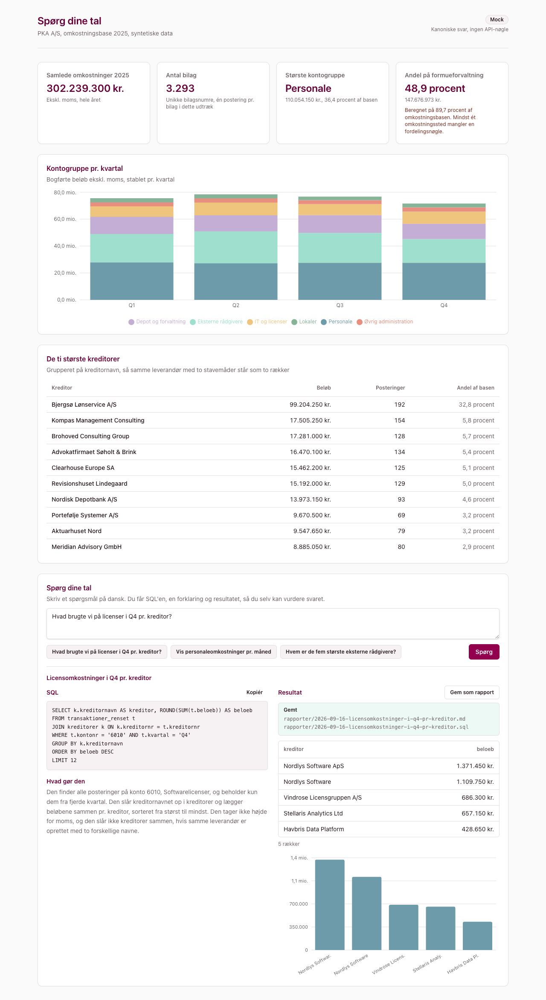

Byg en app, der svarer på spørgsmål til jeres omkostningstal, og som viser hvordan den kom frem til svaret
Du bygger en lille webapp i en mappe. Den viser PKA A/S' omkostningsbase 2025 som et dashboard, og den lader dig stille spørgsmål på dansk: "hvad brugte vi på licenser i Q4, pr. kreditor?" Appen viser SQL'en, en forklaring på almindeligt dansk af hvad den gør, resultatet som tabel og en graf. Du skriver ikke kode. Du beskriver, hvad du vil have, og Claude Code bygger det, én feature ad gangen.

De fem faser
- Åbn mappen i Claude Desktop. Og få Bun på plads med én prompt.
- Startprompten. Hvad du vil bygge, og de tekniske valg. Dashboardet står.
- Snak med dine data, simuleret. Spørgsmål på dansk, svar med SQL, forklaring, tabel og graf.
- Slå Claude til. Nøglen ind, og frie spørgsmål.
- Byg videre. Idéer til det næste, I selv vil have.
Baggrund: hvorfor lige denne opgave
Økonomiopfølgning starter næsten altid med et udtræk fra Finanskuben og et spørgsmål: hvad brugte vi på det her, hvem fik pengene, og hvordan har det udviklet sig? I dag er vejen fra spørgsmål til svar et Excel-ark, en pivot og en del håndarbejde. Den her app gør vejen kortere, men den gør noget vigtigere: den viser hvordan den kom frem til svaret, så du kan vurdere det, uanset om du kan læse SQL eller ikke.
Data er syntetisk. Konti, kreditorer og beløb er opdigtede, men formen er den samme som et rigtigt udtræk fra Finanskuben: transaktioner, kontoplan, kreditorer, omkostningssteder og en fordelingsnøgle.
Det eneste, der ligger i mappen, når du starter, er data og en beskrivelse af dem. Resten bygger Claude Code ud fra det, du skriver. Alt ender som filer i mappen. Ikke et svar i et chatvindue.
Åbn mappen i Claude Desktop
Mappen er Claudes verden. Alt hvad den ved om opgaven, står i de filer, der ligger i den mappe, du åbner. Så det første valg er, hvilken mappe.
session2-code i det materiale, du pakkede ud. Ikke roden af materialet, og ikke session2-facit.Det, der ligger i mappen
data/finanskube-2025.sqlite· udtrækket, ca. 3.300 transaktionerdata/DATAMODEL.md· tabeller og kolonner forklaretsession2-guidet-opgave.html· den her side
Appen kommer til at køre på Bun, en lille JavaScript-runtime. Det er en engangsinstallation, og hvad Bun egentlig er, er ligegyldigt, hvis du ikke er udvikler. Det skal bare lige virke, og det kan Claude sørge for.
Startprompten
Den vigtigste prompt i hele øvelsen. Den består af to dele: hvad du vil bygge, i almindeligt sprog, og de tekniske valg, du vil have Claude til at bruge. Den første del er din. Den anden del har vi skrevet for dig, så I kommer godt fra start.
Vis startprompten, indsæt hele blokken
CLAUDE.md med de tekniske valg, og starter appen. Åbn http://localhost:3000 i en browser: nøgletal øverst, en graf pr. kvartal og en tabel med kreditorer.Snak med dine data, i første omgang simuleret
Dashboardet svarer på de spørgsmål, nogen har besluttet på forhånd. Nu tilføjer vi det, der svarer på dine. I første omgang bygger vi en simuleret version: appen svarer fra et fast sæt eksempelsvar, så I kan se og prøve hele funktionen uden en API-nøgle. Den rigtige model kobler vi på i fase 4. Bemærk, at prompten beskriver, hvad du vil have, ikke hvordan det skal laves.
Vis prompten, indsæt hele blokken
Slå Claude til
Indtil nu har appen svaret fra et fast sæt. Nu får den en rigtig model bag sig. Først beder du appen om et sted at lægge nøglen, og så henter du nøglen.
sk-ant-. Kopiér den.! powershell -c "Get-Clipboard | Set-Content -Path .env -NoNewline". Skriv derefter "Genstart appen."Byg videre
Herfra er der ingen færdige prompts. I har set formen: beskriv hvad du vil have, i almindeligt sprog, og se det ske. Nogle retninger, der er værd at forfølge:
Det næste, I selv vil have
- Se data. En knap i headeren, der viser de seks tabeller som kort med deres kolonner, hvordan de hænger sammen, og de første rækker i hver. Når et svar vises, fremhæves de tabeller, SQL'en brugte. Så kan alle se, hvorfor "licenser pr. kreditor" kræver to opslag.
- Budget mod realiseret. Bed Claude lave et budget pr. kontogruppe pr. kvartal, og vis afvigelsen på dashboardet.
- Udvikling over tid. Hvilke kreditorer er vokset mest fra Q1 til Q4? Hvilke konti stiger måned for måned?
- Fordelingen. Vis omkostningsbasen fordelt på formueforvaltning og medlemsadministration pr. kontogruppe, ikke kun i alt.
- Gemte spørgsmål. Lad appen huske de spørgsmål, I stiller ofte, som knapper, så de kan køres igen med ét klik næste kvartal.
- Gem som rapport. En knap, der gemmer spørgsmål, forklaring, SQL og resultat som en fil i mappen, så det kan sendes til en kollega.
- Eksport til Excel. En knap, der lægger resultattabellen i en fil, kollegaen kan åbne direkte.
- Jeres egne kolonner. Læg et ufølsomt udtræk i
data/, og bed Claude importere det i databasen. Så virker resten af appen på jeres tal. - Opfølgning på et svar. Lad brugeren stille et opfølgende spørgsmål til det svar, der står på skærmen: "og kun for Q4?"
Hvis noget går galt: det færdige eksempel
I session2-facit/ ligger den app, vi selv fik ud af at køre prompterne igennem. Kør bun install og bun run dev i den mappe, hvis du vil se slutresultatet, eller kopiér en fil derfra, hvis din egen version er kørt fast. Det er et eksempel, ikke et facit i skolebetydningen. Din version må gerne være anderledes.